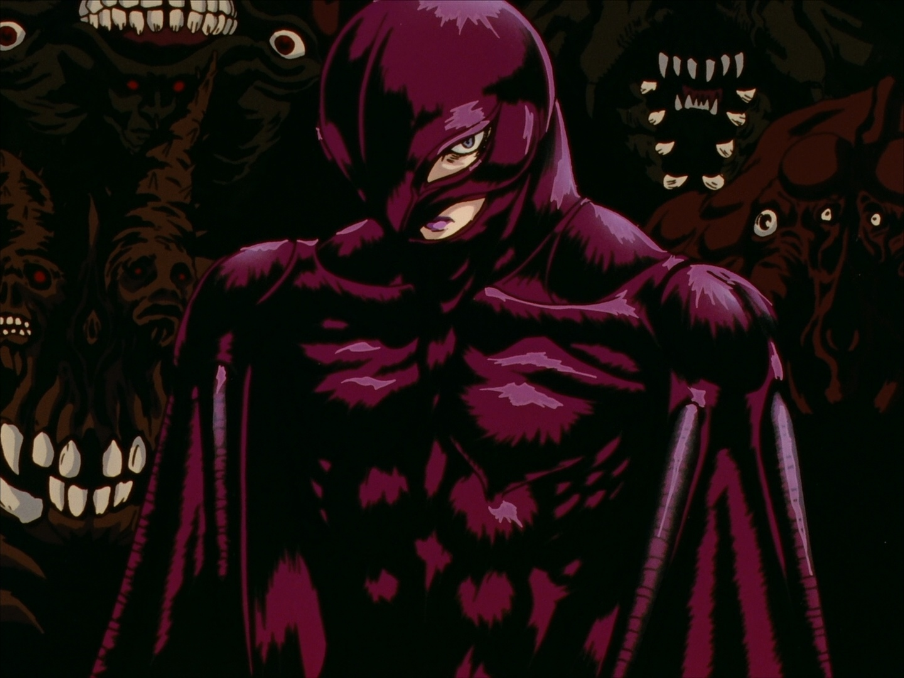

GUTS
Avtor
GUTS AND FRIENDS
HAWK
HAND OF GOD
PACANY
Гриффит — один из главных героев серии «Берсерк», когда-то лучший друг Гатса, позже заклятый враг. Гриффит, одержимый мечтой о собственном королевстве, создал отряд Сокола, где служили Гатс, Каска и их друзья. Благодаря военным талантам Гриффита и доблести его друзей «Соколы» одержали множество побед. В конце «Золотого века» Гриффит отдал своих друзей в жертву демонической Длани Господа в обмен на право занять место в ее рядах, и действительно переродился в образе демонического существа по имени Фемто. Гатс и Каска были единственными, кому удалось выжить, и в дальнейшем Гатс потратил годы в попытках найти Гриффита-Фемто и отомстить ему. Позже Гриффит вернулся на землю, чтобы основать новый отряд Сокола и королевство Фалькония.
